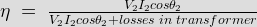

- The efficiency of a transformer is 90%. Its power factor is 0.8 lag at full load. Its efficiency at full load 0.8 p.f. lead will be
The efficiency of transformer

Where cosθ2 is power factor. θ2 is positive when power factor is lagging and θ2 is negative when power factor is leading. But in both cases the value of cosθ2(pf) is positive and same. If the efficiency of a transformer at full load 0.8 p.f. lag is 90%, its efficiency at full load 0.8 lead will be 90 % too. - Distribution transformer have core losses
Distribution transformer is kept loaded 24 hours X 365 days. But the load pattern of the transformer varies abruptly for different times during 24 hrs. The transformer may remains no load or very low load condition during mid night. Core loss is constant loss in a transformer so for reducing continuous losses, the distribution transformer is designed to have minimum core losses.
- Eddy current loss in transformer depends upon
The total core loss Pc in terms of voltage and frequency is Pc = hysteresis loss + eddy current loss = khVx f (1 - x) + keV2. Therefore, eddy current loss varies with square of voltage.
- Hysteresis loss in a transformer depends upon
The total core loss Pc in terms of voltage and frequency is Pc = hysteresis loss + eddy current loss = khVx f (1 - x) + keV2. Therefore, hysteresis loss varies with both voltage and frequency.
- In a transformer
When open circuit test in conducted on a transformer, rated voltage will be applied. The rated voltage should be such that it will not exceed the voltmeter rated value. That is why OC test more preferably conducted on LV side of transformer. On the other hand during short circuit test only rated current is applied to the transformer and for this required voltage is very low with respect to rated high voltage of the transformer. That is why, SC test is preferably conducted on HV side of transformer.
- One 20V, 100W bulb is connected in series with the primary of a 200V, 10 kVA transformer. If its secondary is open circuited, then the bulb will have
rated current of bulb is 100/200 = 0.5 A. Bulb glows with full brightness when rated current flows through it. During Open Circuit test, primary of transformer will take only magnetizing current from source which is 2 to 6% of the rated primary current 10000/200 = 50 A. So brightness of the bulb will be poor.
- The no load current in a power transformer in term of its rated current, is
The no load current in a power transformer in term of its rated current, is 2 to 6%.
- Maximum efficiency of transformer for a constant load occurs at
The efficiency of transformer,

Where cosθ2 is power factor. It can be proved that efficiency is maximum when cosθ2 = 1 - For a 1.15 kVA 230/460V transformer connected to a standard 1 - phase 230V supply, the no load current likely to be,
The transformer will have full load current 1.15X1000/230 = 5 A, 4% of that is 0.2A.
- The primary of a 220/6 V, 50 Hz transformer is connected to a 110V, 60 Hz supply. The secondary output voltage is
- A transformer having voltage ratio of 3000/300 V takes a current of 0.7 Amp from the primary at a power factor of 0.6 under open circuit condition. Calculate the magnetizing current of the transformer.
No load primary current Io = 0.7 Amp,
Power factor cosΦo = 0.6,
Core loss component Iw = Io cosΦo = 0.7 X 0.6 = 0.42 A.
Magnetizing current Iμ = (Io2 - Iw2)0.5 = (0.72 - 0.422)0.5 = 0.56 A. - A 300 kVA 2 winding transformer has iron loss of 3 KW and a full load copper loss of 3.5 Kw. Calculate the kVA loading for maximum efficiency.
Full load kVA = 300 kVA. The kVA loading corresponding to maximum efficiency = Full load kVA X (Iron loss/Full load copper loss)0.5. = 300 X √(3/3.5) = 462.9 kVA.
- An auto-transformer is supplied with a load of 8 kW and 115 Volt at an unity power factor. If the secondary voltage is 345 volt, calculate the power transferred to the inductive load.
Let the turns ratio k = 115/345 = 1/3 & power input = 8 kW. Now, inductive power transferred = power input X (1-k) = 8 X (1- 1/3) = 5.33 kW i.e. option A.
- Two transformers are connected in open delta supplies a 550 kVA balanced load at a power factor of 0.8 lagging. Calculate the kVA supply by each transformer if the load voltage is 438 volts
Ratio of operating capacity to available capacity in open delta connection is 0.8.
Therefore, kVA of each transformer is one-half the of total kVA loading divided by 0.8 ∴ kVA of each transformer = (550/2)/0.8 = 343.75 kVA i.e. option B. - A single phase 50 Hz transformer has a voltage ratio of 6600/440 volt. Its equivalent circuit resistance is 0.02 pu and equivalent reactance is 0.05 pu. Find full load voltage regulation at a power factor of 0.8 lagging if the primary voltage is 3300 Volt.
cosφ2 = 0.8
∴ Sin φ2 = 0.6
p.u. voltage regulation = r2cosφ2 + x2sinφ2 =(0.02)(0.8) + (0.05)(0.6) = 0.046. - A 1 φ, 50 Hz transformer is having a voltage ratio of 300/3000 volts. If Emf per turn is 10 volts find primary and secondary number of turns.
E1 = N1 X emf per turn
∴ N1 = 300/10 = 30
∴ N2 = 3000/10 = 300. - A 2200/200 V transformer draws a no load primary current of 0.6 Amp and absorbs 400 W. Find the current for iron loss in the transformer.
Iron loss current = no load input power in watt / primary voltage = 400/2200 = 0.182 Amp.
- A 30 kVA, single phase transformer has the voltage ratio of 6000/230 V and the circuit parameters are :
Primary winding resistance = 10 Ω
Secondary winding resistance referred to primary = 10.8 Ω
Primary winding leakage reactance = 16 Ω
Secondary winding leakage reactance referred to primary = 18 Ω
Calculate the primary voltage for full load short- circuit current when no load current is neglected.R01 = R1 + R2' = 10 + 10.8 = 20.8 Ω
X01 = X1 + X2' = 16 + 18 = 34 Ω
Z01 = 39.8 Ω
I2 = 30 X 103/230 = 130.4 Amp
K= 230/6000 = 23/600
I1 = I2' = (23/600) X 130.4 = 5A
Vsc = I1 X Z01 = 5 X 39.8 = 199 V. - A 230/460 V transformer has a primary resistance of 0.2 Ω and reactance of 0.5 Ω. The secondary resistance and reactance are 0.75 Ω and 1.8 Ω respectively. Find the secondary terminal voltage when 10 Amp current is given to the primary at a power factor of 0.8 lagging.
k= 460/230 = 2, R02 = R2 + k2 R1 = 0.75 + 4 X 0.2 = 1.55 Ω
X02 = X2 + k2 X1 = 1.8 X 4 X 0.5 = 3.6 Ω
Voltage drop = I2( R02 cos φ + X02 sinφ) = 10 ( 1.55 X 0.8 + 3.6 X 0.6 ) = 34 volt
∴ Secondary terminal voltage = 460 – 34 = 426 volt. - A 100 kVA, 2 winding transformer has an iron loss of 1 kW and a copper loss of 1.5 kW at normal output current. Calculate efficiency at 0.8 lagging power factor.
Load KVA = full load kVA X √( iron loss/ cu loss) = 100 X √(1/1.5) = 81.6 kVA
Total loss = 2.5 kW, Power output = 81.6 X 0.8 = 65.3 kW
∴ efficiency = 65.3/(65.3 + 2.5) = 96.3 %.
Design with  by SARU TECH
by SARU TECH
www.sarutech.com
Content Credited to electrical4u.com
Online Electrical Engineering Study Site